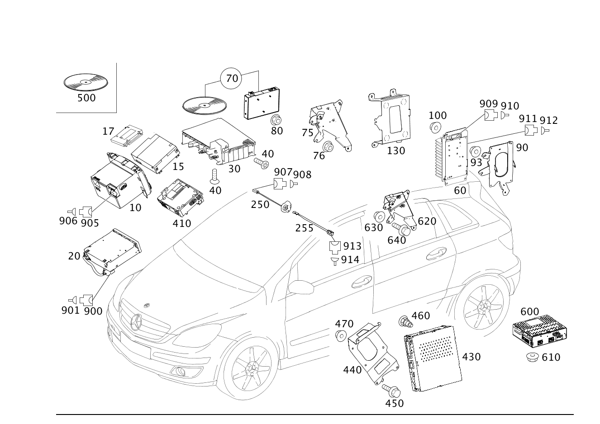

| № | Артикул | Название | Кол. | Примечание | Ограничение |
|---|---|---|---|---|---|
| 10 | A 169 820 00 86 | Радиоприемник | 1 | Audio 5 [697] ДЕТАЛЬ ПОСТАВЛЯЕТСЯ ТОЛЬКО/ИЛИ ТАКЖЕ КАК ЗАП.ЧАСТЬ | 520 |
| 10 | A 169 820 02 86 | Радиоприемник | 1 | Audio 5 [697] ДЕТАЛЬ ПОСТАВЛЯЕТСЯ ТОЛЬКО/ИЛИ ТАКЖЕ КАК ЗАП.ЧАСТЬ | 520 |
| 10 | A 169 820 03 86 | Радиоприемник | 1 | Audio 5 [697] ДЕТАЛЬ ПОСТАВЛЯЕТСЯ ТОЛЬКО/ИЛИ ТАКЖЕ КАК ЗАП.ЧАСТЬ | 520 |
| 10 | A 169 820 04 86 | Радиоприемник | 1 | Audio 5 [697] ДЕТАЛЬ ПОСТАВЛЯЕТСЯ ТОЛЬКО/ИЛИ ТАКЖЕ КАК ЗАП.ЧАСТЬ | 520 |
| 10 | A 169 820 05 86 | Радиоприемник | 1 | Audio 5 [525] ОБРАТНАЯ СВЯЗЬ ОБЯЗАТЕЛЬНО ЧЕРЕЗ СИСТЕМУ РАСЧЕТОВ SYREK В ФРГ ДЕТАЛЬ ЗАКАЗЫВАТЬ КАК ВОССТАНОВЛЕННУЮ ДЕТАЛЬ | 520 |
| 10 | A 169 820 07 86 | Радиоприемник | 1 | Audio 5 [525] ОБРАТНАЯ СВЯЗЬ ОБЯЗАТЕЛЬНО ЧЕРЕЗ СИСТЕМУ РАСЧЕТОВ SYREK В ФРГ ДЕТАЛЬ ЗАКАЗЫВАТЬ КАК ВОССТАНОВЛЕННУЮ ДЕТАЛЬ [697] ДЕТАЛЬ ПОСТАВЛЯЕТСЯ ТОЛЬКО/ИЛИ ТАКЖЕ КАК ЗАП.ЧАСТЬ | 520 |
| 10 | A 169 820 08 86 | Радиоприемник (RADIO) | 1 | Audio 5 [525] ОБРАТНАЯ СВЯЗЬ ОБЯЗАТЕЛЬНО ЧЕРЕЗ СИСТЕМУ РАСЧЕТОВ SYREK В ФРГ ДЕТАЛЬ ЗАКАЗЫВАТЬ КАК ВОССТАНОВЛЕННУЮ ДЕТАЛЬ [697] ДЕТАЛЬ ПОСТАВЛЯЕТСЯ ТОЛЬКО/ИЛИ ТАКЖЕ КАК ЗАП.ЧАСТЬ | 520 |
| 10 | A 169 870 23 89 | Элемент управления | 1 | AUDIO 5 [525] ОБРАТНАЯ СВЯЗЬ ОБЯЗАТЕЛЬНО ЧЕРЕЗ СИСТЕМУ РАСЧЕТОВ SYREK В ФРГ ДЕТАЛЬ ЗАКАЗЫВАТЬ КАК ВОССТАНОВЛЕННУЮ ДЕТАЛЬ [697] ДЕТАЛЬ ПОСТАВЛЯЕТСЯ ТОЛЬКО/ИЛИ ТАКЖЕ КАК ЗАП.ЧАСТЬ | 520 |
| 10 | A 169 900 29 00 | Блок управления (CONTROL UNIT) | 1 | Audio 5 | 520 |
| 10 | A 169 870 37 94 | Устройство управления | 1 | AUDIO 20 ECE [525] ОБРАТНАЯ СВЯЗЬ ОБЯЗАТЕЛЬНО ЧЕРЕЗ СИСТЕМУ РАСЧЕТОВ SYREK В ФРГ ДЕТАЛЬ ЗАКАЗЫВАТЬ КАК ВОССТАНОВЛЕННУЮ ДЕТАЛЬ [697] ДЕТАЛЬ ПОСТАВЛЯЕТСЯ ТОЛЬКО/ИЛИ ТАКЖЕ КАК ЗАП.ЧАСТЬ | 523 |
| 10 | A 169 870 54 94 | Устройство управления | 1 | AUDIO 20 ECE [525] ОБРАТНАЯ СВЯЗЬ ОБЯЗАТЕЛЬНО ЧЕРЕЗ СИСТЕМУ РАСЧЕТОВ SYREK В ФРГ ДЕТАЛЬ ЗАКАЗЫВАТЬ КАК ВОССТАНОВЛЕННУЮ ДЕТАЛЬ [697] ДЕТАЛЬ ПОСТАВЛЯЕТСЯ ТОЛЬКО/ИЛИ ТАКЖЕ КАК ЗАП.ЧАСТЬ | 523 |
| 10 | A 169 870 57 94 | Устройство управления | 1 | AUDIO 20 ECE [525] ОБРАТНАЯ СВЯЗЬ ОБЯЗАТЕЛЬНО ЧЕРЕЗ СИСТЕМУ РАСЧЕТОВ SYREK В ФРГ ДЕТАЛЬ ЗАКАЗЫВАТЬ КАК ВОССТАНОВЛЕННУЮ ДЕТАЛЬ [697] ДЕТАЛЬ ПОСТАВЛЯЕТСЯ ТОЛЬКО/ИЛИ ТАКЖЕ КАК ЗАП.ЧАСТЬ | 523 |
| 10 | A 169 870 58 94 | Элемент управления | 1 | AUDIO 20 [525] ОБРАТНАЯ СВЯЗЬ ОБЯЗАТЕЛЬНО ЧЕРЕЗ СИСТЕМУ РАСЧЕТОВ SYREK В ФРГ ДЕТАЛЬ ЗАКАЗЫВАТЬ КАК ВОССТАНОВЛЕННУЮ ДЕТАЛЬ [697] ДЕТАЛЬ ПОСТАВЛЯЕТСЯ ТОЛЬКО/ИЛИ ТАКЖЕ КАК ЗАП.ЧАСТЬ | 523 |
| 10 | A 169 900 20 00 | Блок управления (CONTROL UNIT) | 1 | AUDIO 20 [525] ОБРАТНАЯ СВЯЗЬ ОБЯЗАТЕЛЬНО ЧЕРЕЗ СИСТЕМУ РАСЧЕТОВ SYREK В ФРГ ДЕТАЛЬ ЗАКАЗЫВАТЬ КАК ВОССТАНОВЛЕННУЮ ДЕТАЛЬ [697] ДЕТАЛЬ ПОСТАВЛЯЕТСЯ ТОЛЬКО/ИЛИ ТАКЖЕ КАК ЗАП.ЧАСТЬ | 523 |
| 10 | A 169 870 55 94 | Устройство управления | 1 | AUDIO 25 ECE [525] ОБРАТНАЯ СВЯЗЬ ОБЯЗАТЕЛЬНО ЧЕРЕЗ СИСТЕМУ РАСЧЕТОВ SYREK В ФРГ ДЕТАЛЬ ЗАКАЗЫВАТЬ КАК ВОССТАНОВЛЕННУЮ ДЕТАЛЬ [697] ДЕТАЛЬ ПОСТАВЛЯЕТСЯ ТОЛЬКО/ИЛИ ТАКЖЕ КАК ЗАП.ЧАСТЬ | 510+-494 |
| 10 | A 169 870 59 94 | Элемент управления | 1 | AUDIO 25 ECE [525] ОБРАТНАЯ СВЯЗЬ ОБЯЗАТЕЛЬНО ЧЕРЕЗ СИСТЕМУ РАСЧЕТОВ SYREK В ФРГ ДЕТАЛЬ ЗАКАЗЫВАТЬ КАК ВОССТАНОВЛЕННУЮ ДЕТАЛЬ [697] ДЕТАЛЬ ПОСТАВЛЯЕТСЯ ТОЛЬКО/ИЛИ ТАКЖЕ КАК ЗАП.ЧАСТЬ | 510+-494 |
| 10 | A 169 870 60 94 | Элемент управления | 1 | AUDIO 25 [525] ОБРАТНАЯ СВЯЗЬ ОБЯЗАТЕЛЬНО ЧЕРЕЗ СИСТЕМУ РАСЧЕТОВ SYREK В ФРГ ДЕТАЛЬ ЗАКАЗЫВАТЬ КАК ВОССТАНОВЛЕННУЮ ДЕТАЛЬ [697] ДЕТАЛЬ ПОСТАВЛЯЕТСЯ ТОЛЬКО/ИЛИ ТАКЖЕ КАК ЗАП.ЧАСТЬ | 510+-494 |
| 10 | A 169 900 21 00 | Блок управления (CONTROL UNIT) | 1 | AUDIO 25 [525] ОБРАТНАЯ СВЯЗЬ ОБЯЗАТЕЛЬНО ЧЕРЕЗ СИСТЕМУ РАСЧЕТОВ SYREK В ФРГ ДЕТАЛЬ ЗАКАЗЫВАТЬ КАК ВОССТАНОВЛЕННУЮ ДЕТАЛЬ [697] ДЕТАЛЬ ПОСТАВЛЯЕТСЯ ТОЛЬКО/ИЛИ ТАКЖЕ КАК ЗАП.ЧАСТЬ [402] БОЛЬШЕ НЕ ПОСТАВЛЯЕТСЯ | 510+-494 |
| 10 | A 169 870 47 94 | Элемент управления | 1 | AUDIO 50 [525] ОБРАТНАЯ СВЯЗЬ ОБЯЗАТЕЛЬНО ЧЕРЕЗ СИСТЕМУ РАСЧЕТОВ SYREK В ФРГ ДЕТАЛЬ ЗАКАЗЫВАТЬ КАК ВОССТАНОВЛЕННУЮ ДЕТАЛЬ [697] ДЕТАЛЬ ПОСТАВЛЯЕТСЯ ТОЛЬКО/ИЛИ ТАКЖЕ КАК ЗАП.ЧАСТЬ | 525 |
| 10 | A 169 870 61 94 | Устройство управления | 1 | AUDIO 50 [525] ОБРАТНАЯ СВЯЗЬ ОБЯЗАТЕЛЬНО ЧЕРЕЗ СИСТЕМУ РАСЧЕТОВ SYREK В ФРГ ДЕТАЛЬ ЗАКАЗЫВАТЬ КАК ВОССТАНОВЛЕННУЮ ДЕТАЛЬ [697] ДЕТАЛЬ ПОСТАВЛЯЕТСЯ ТОЛЬКО/ИЛИ ТАКЖЕ КАК ЗАП.ЧАСТЬ | 525 |
| 10 | A 169 870 86 94 | Элемент управления | 1 | AUDIO 50 [525] ОБРАТНАЯ СВЯЗЬ ОБЯЗАТЕЛЬНО ЧЕРЕЗ СИСТЕМУ РАСЧЕТОВ SYREK В ФРГ ДЕТАЛЬ ЗАКАЗЫВАТЬ КАК ВОССТАНОВЛЕННУЮ ДЕТАЛЬ [697] ДЕТАЛЬ ПОСТАВЛЯЕТСЯ ТОЛЬКО/ИЛИ ТАКЖЕ КАК ЗАП.ЧАСТЬ | 525 |
| 10 | A 169 906 06 00 | Элемент управления | 1 | AUDIO 50 [525] ОБРАТНАЯ СВЯЗЬ ОБЯЗАТЕЛЬНО ЧЕРЕЗ СИСТЕМУ РАСЧЕТОВ SYREK В ФРГ ДЕТАЛЬ ЗАКАЗЫВАТЬ КАК ВОССТАНОВЛЕННУЮ ДЕТАЛЬ [697] ДЕТАЛЬ ПОСТАВЛЯЕТСЯ ТОЛЬКО/ИЛИ ТАКЖЕ КАК ЗАП.ЧАСТЬ | 525 |
| 10 | A 169 906 16 00 | Элемент управления | 1 | AUDIO 50 [525] ОБРАТНАЯ СВЯЗЬ ОБЯЗАТЕЛЬНО ЧЕРЕЗ СИСТЕМУ РАСЧЕТОВ SYREK В ФРГ ДЕТАЛЬ ЗАКАЗЫВАТЬ КАК ВОССТАНОВЛЕННУЮ ДЕТАЛЬ [697] ДЕТАЛЬ ПОСТАВЛЯЕТСЯ ТОЛЬКО/ИЛИ ТАКЖЕ КАК ЗАП.ЧАСТЬ | 525 |
| 10 | A 169 900 22 00 | Блок управления (CONTROL UNIT) | 1 | AUDIO 50 [525] ОБРАТНАЯ СВЯЗЬ ОБЯЗАТЕЛЬНО ЧЕРЕЗ СИСТЕМУ РАСЧЕТОВ SYREK В ФРГ ДЕТАЛЬ ЗАКАЗЫВАТЬ КАК ВОССТАНОВЛЕННУЮ ДЕТАЛЬ [697] ДЕТАЛЬ ПОСТАВЛЯЕТСЯ ТОЛЬКО/ИЛИ ТАКЖЕ КАК ЗАП.ЧАСТЬ | 525 |
| 10 | A 169 900 84 00 | Блок управления (CONTROL UNIT) | 1 | AUDIO 50 [672] ДЕТАЛЬ ПОСЛЕ УСТАН.ПРОВЕРИТЬ НА АКТУАЛЬНОСТЬ "ПРОШИВНОГО" ПО [697] ДЕТАЛЬ ПОСТАВЛЯЕТСЯ ТОЛЬКО/ИЛИ ТАКЖЕ КАК ЗАП.ЧАСТЬ [402] БОЛЬШЕ НЕ ПОСТАВЛЯЕТСЯ | 525 |
| 10 | A 169 820 48 89 | Устройство управления (OPERATING UNIT) | 1 | AUDIO 20 [402] БОЛЬШЕ НЕ ПОСТАВЛЯЕТСЯ | 535 |
| 10 | A 169 820 76 89 | Элемент управления | 1 | AUDIO 20 [697] ДЕТАЛЬ ПОСТАВЛЯЕТСЯ ТОЛЬКО/ИЛИ ТАКЖЕ КАК ЗАП.ЧАСТЬ | 535 |
| 10 | A 169 820 62 89 | Элемент управления | 1 | AUDIO 20 | 535 |
| 10 | A 169 870 07 89 | Устройство управления (OPERATING UNIT) | 1 | AUDIO 20 | 535 |
| 10 | A 169 870 48 94 | Элемент управления | 1 | [672] ДЕТАЛЬ ПОСЛЕ УСТАН.ПРОВЕРИТЬ НА АКТУАЛЬНОСТЬ "ПРОШИВНОГО" ПО [697] ДЕТАЛЬ ПОСТАВЛЯЕТСЯ ТОЛЬКО/ИЛИ ТАКЖЕ КАК ЗАП.ЧАСТЬ | 511 |
| 10 | A 169 870 63 94 | Элемент управления | 1 | [672] ДЕТАЛЬ ПОСЛЕ УСТАН.ПРОВЕРИТЬ НА АКТУАЛЬНОСТЬ "ПРОШИВНОГО" ПО [697] ДЕТАЛЬ ПОСТАВЛЯЕТСЯ ТОЛЬКО/ИЛИ ТАКЖЕ КАК ЗАП.ЧАСТЬ | 511 |
| 10 | A 169 870 87 94 | Элемент управления | 1 | AUDIO 55 [672] ДЕТАЛЬ ПОСЛЕ УСТАН.ПРОВЕРИТЬ НА АКТУАЛЬНОСТЬ "ПРОШИВНОГО" ПО [697] ДЕТАЛЬ ПОСТАВЛЯЕТСЯ ТОЛЬКО/ИЛИ ТАКЖЕ КАК ЗАП.ЧАСТЬ | 511 |
| 10 | A 169 906 07 00 | Элемент управления | 1 | AUDIO 55 [672] ДЕТАЛЬ ПОСЛЕ УСТАН.ПРОВЕРИТЬ НА АКТУАЛЬНОСТЬ "ПРОШИВНОГО" ПО [697] ДЕТАЛЬ ПОСТАВЛЯЕТСЯ ТОЛЬКО/ИЛИ ТАКЖЕ КАК ЗАП.ЧАСТЬ | 511 |
| 10 | A 169 906 17 00 | Элемент управления | 1 | AUDIO 55 [672] ДЕТАЛЬ ПОСЛЕ УСТАН.ПРОВЕРИТЬ НА АКТУАЛЬНОСТЬ "ПРОШИВНОГО" ПО [697] ДЕТАЛЬ ПОСТАВЛЯЕТСЯ ТОЛЬКО/ИЛИ ТАКЖЕ КАК ЗАП.ЧАСТЬ | 511 |
| 10 | A 169 900 23 00 | Блок управления | 1 | AUDIO 55 [672] ДЕТАЛЬ ПОСЛЕ УСТАН.ПРОВЕРИТЬ НА АКТУАЛЬНОСТЬ "ПРОШИВНОГО" ПО [697] ДЕТАЛЬ ПОСТАВЛЯЕТСЯ ТОЛЬКО/ИЛИ ТАКЖЕ КАК ЗАП.ЧАСТЬ | 511 |
| 10 | A 169 900 85 00 | Блок управления (CONTROL UNIT) | 1 | AUDIO 55 [672] ДЕТАЛЬ ПОСЛЕ УСТАН.ПРОВЕРИТЬ НА АКТУАЛЬНОСТЬ "ПРОШИВНОГО" ПО [697] ДЕТАЛЬ ПОСТАВЛЯЕТСЯ ТОЛЬКО/ИЛИ ТАКЖЕ КАК ЗАП.ЧАСТЬ [402] БОЛЬШЕ НЕ ПОСТАВЛЯЕТСЯ | 511 |
| 10 | A 169 870 49 94 | Элемент управления | 1 | COMAND ECE [525] ОБРАТНАЯ СВЯЗЬ ОБЯЗАТЕЛЬНО ЧЕРЕЗ СИСТЕМУ РАСЧЕТОВ SYREK В ФРГ ДЕТАЛЬ ЗАКАЗЫВАТЬ КАК ВОССТАНОВЛЕННУЮ ДЕТАЛЬ [697] ДЕТАЛЬ ПОСТАВЛЯЕТСЯ ТОЛЬКО/ИЛИ ТАКЖЕ КАК ЗАП.ЧАСТЬ | 527 |
| 10 | A 169 870 65 94 | Элемент управления | 1 | COMAND ECE [525] ОБРАТНАЯ СВЯЗЬ ОБЯЗАТЕЛЬНО ЧЕРЕЗ СИСТЕМУ РАСЧЕТОВ SYREK В ФРГ ДЕТАЛЬ ЗАКАЗЫВАТЬ КАК ВОССТАНОВЛЕННУЮ ДЕТАЛЬ [697] ДЕТАЛЬ ПОСТАВЛЯЕТСЯ ТОЛЬКО/ИЛИ ТАКЖЕ КАК ЗАП.ЧАСТЬ | 527 |
| 10 | A 169 870 88 94 | Элемент управления | 1 | COMAND ECE [525] ОБРАТНАЯ СВЯЗЬ ОБЯЗАТЕЛЬНО ЧЕРЕЗ СИСТЕМУ РАСЧЕТОВ SYREK В ФРГ ДЕТАЛЬ ЗАКАЗЫВАТЬ КАК ВОССТАНОВЛЕННУЮ ДЕТАЛЬ [697] ДЕТАЛЬ ПОСТАВЛЯЕТСЯ ТОЛЬКО/ИЛИ ТАКЖЕ КАК ЗАП.ЧАСТЬ | 527 |
| 10 | A 169 906 08 00 | Элемент управления | 1 | COMAND [525] ОБРАТНАЯ СВЯЗЬ ОБЯЗАТЕЛЬНО ЧЕРЕЗ СИСТЕМУ РАСЧЕТОВ SYREK В ФРГ ДЕТАЛЬ ЗАКАЗЫВАТЬ КАК ВОССТАНОВЛЕННУЮ ДЕТАЛЬ [697] ДЕТАЛЬ ПОСТАВЛЯЕТСЯ ТОЛЬКО/ИЛИ ТАКЖЕ КАК ЗАП.ЧАСТЬ | 527 |
| 10 | A 169 906 18 00 | Элемент управления | 1 | COMAND [525] ОБРАТНАЯ СВЯЗЬ ОБЯЗАТЕЛЬНО ЧЕРЕЗ СИСТЕМУ РАСЧЕТОВ SYREK В ФРГ ДЕТАЛЬ ЗАКАЗЫВАТЬ КАК ВОССТАНОВЛЕННУЮ ДЕТАЛЬ [697] ДЕТАЛЬ ПОСТАВЛЯЕТСЯ ТОЛЬКО/ИЛИ ТАКЖЕ КАК ЗАП.ЧАСТЬ | 527 |
| 10 | A 169 900 24 00 | Блок управления | 1 | COMAND [525] ОБРАТНАЯ СВЯЗЬ ОБЯЗАТЕЛЬНО ЧЕРЕЗ СИСТЕМУ РАСЧЕТОВ SYREK В ФРГ ДЕТАЛЬ ЗАКАЗЫВАТЬ КАК ВОССТАНОВЛЕННУЮ ДЕТАЛЬ [697] ДЕТАЛЬ ПОСТАВЛЯЕТСЯ ТОЛЬКО/ИЛИ ТАКЖЕ КАК ЗАП.ЧАСТЬ | 527 |
| 10 | A 169 900 78 00 | Блок управления (CONTROL UNIT) | 1 | COMAND [672] ДЕТАЛЬ ПОСЛЕ УСТАН.ПРОВЕРИТЬ НА АКТУАЛЬНОСТЬ "ПРОШИВНОГО" ПО [697] ДЕТАЛЬ ПОСТАВЛЯЕТСЯ ТОЛЬКО/ИЛИ ТАКЖЕ КАК ЗАП.ЧАСТЬ [402] БОЛЬШЕ НЕ ПОСТАВЛЯЕТСЯ | 527 |
| 10 | A 169 820 41 89 | Элемент управления | 1 | COMAND | 530 |
| 10 | A 169 820 79 89 | Элемент управления | 1 | COMAND; HU | 530 |
| 10 | A 169 870 05 89 | Устройство управления (OPERATING UNIT) | 1 | COMAND [402] БОЛЬШЕ НЕ ПОСТАВЛЯЕТСЯ | 530 |
| 10 | A 169 870 50 94 | Устройство управления | 1 | COMAND PLUS ECE [525] ОБРАТНАЯ СВЯЗЬ ОБЯЗАТЕЛЬНО ЧЕРЕЗ СИСТЕМУ РАСЧЕТОВ SYREK В ФРГ ДЕТАЛЬ ЗАКАЗЫВАТЬ КАК ВОССТАНОВЛЕННУЮ ДЕТАЛЬ [697] ДЕТАЛЬ ПОСТАВЛЯЕТСЯ ТОЛЬКО/ИЛИ ТАКЖЕ КАК ЗАП.ЧАСТЬ | 512+-494 |
| 10 | A 169 870 89 94 | Элемент управления | 1 | COMAND PLUS ECE [525] ОБРАТНАЯ СВЯЗЬ ОБЯЗАТЕЛЬНО ЧЕРЕЗ СИСТЕМУ РАСЧЕТОВ SYREK В ФРГ ДЕТАЛЬ ЗАКАЗЫВАТЬ КАК ВОССТАНОВЛЕННУЮ ДЕТАЛЬ [697] ДЕТАЛЬ ПОСТАВЛЯЕТСЯ ТОЛЬКО/ИЛИ ТАКЖЕ КАК ЗАП.ЧАСТЬ | 512+-494 |
| 10 | A 169 870 24 94 | ПАНЕЛЬ УПРАВЛ. | 1 | COMAND PLUS USA | 512+494 |
| 10 | A 169 870 34 94 | Элемент управления | 1 | COMAND PLUS USA | 512+494 |
| 10 | A 169 870 44 94 | Элемент управления | 1 | COMAND PLUS USA | 512+494 |
| 10 | A 169 906 09 00 | Элемент управления | 1 | COMAND PLUS [525] ОБРАТНАЯ СВЯЗЬ ОБЯЗАТЕЛЬНО ЧЕРЕЗ СИСТЕМУ РАСЧЕТОВ SYREK В ФРГ ДЕТАЛЬ ЗАКАЗЫВАТЬ КАК ВОССТАНОВЛЕННУЮ ДЕТАЛЬ [697] ДЕТАЛЬ ПОСТАВЛЯЕТСЯ ТОЛЬКО/ИЛИ ТАКЖЕ КАК ЗАП.ЧАСТЬ | 512+-494 |
| 10 | A 169 906 19 00 | Элемент управления | 1 | COMAND PLUS [525] ОБРАТНАЯ СВЯЗЬ ОБЯЗАТЕЛЬНО ЧЕРЕЗ СИСТЕМУ РАСЧЕТОВ SYREK В ФРГ ДЕТАЛЬ ЗАКАЗЫВАТЬ КАК ВОССТАНОВЛЕННУЮ ДЕТАЛЬ [697] ДЕТАЛЬ ПОСТАВЛЯЕТСЯ ТОЛЬКО/ИЛИ ТАКЖЕ КАК ЗАП.ЧАСТЬ | 512+-494 |
| 10 | A 169 900 25 00 | Блок управления (CONTROL UNIT) | 1 | COMAND PLUS [525] ОБРАТНАЯ СВЯЗЬ ОБЯЗАТЕЛЬНО ЧЕРЕЗ СИСТЕМУ РАСЧЕТОВ SYREK В ФРГ ДЕТАЛЬ ЗАКАЗЫВАТЬ КАК ВОССТАНОВЛЕННУЮ ДЕТАЛЬ [697] ДЕТАЛЬ ПОСТАВЛЯЕТСЯ ТОЛЬКО/ИЛИ ТАКЖЕ КАК ЗАП.ЧАСТЬ | 512+-494 |
| 10 | A 169 900 79 00 | Блок управления (CONTROL UNIT) | 1 | COMAND PLUS [672] ДЕТАЛЬ ПОСЛЕ УСТАН.ПРОВЕРИТЬ НА АКТУАЛЬНОСТЬ "ПРОШИВНОГО" ПО [697] ДЕТАЛЬ ПОСТАВЛЯЕТСЯ ТОЛЬКО/ИЛИ ТАКЖЕ КАК ЗАП.ЧАСТЬ [402] БОЛЬШЕ НЕ ПОСТАВЛЯЕТСЯ | 512+-494 |
| 10 | A 169 870 23 94 | ПАНЕЛЬ УПРАВЛ. | 1 | AUDIO 25 USA | 510+494 |
| 10 | A 169 870 33 94 | Элемент управления | 1 | AUDIO 25 USA | 510+494 |
| 10 | A 169 870 43 94 | Элемент управления | 1 | AUDIO 25 USA | 510+494 |
| 10 | A 169 870 56 94 | Элемент управления | 1 | AUDIO 25 USA | 510+494 |
| 10 | A 169 870 69 94 | Элемент управления | 1 | AUDIO 25 USA | 510+494 |
| 10 | A 169 870 70 94 | Элемент управления | 1 | AUDIO 25 USA | 510+494 |
| 10 | A 169 900 26 00 | Блок управления (CONTROL UNIT) | 1 | [402] БОЛЬШЕ НЕ ПОСТАВЛЯЕТСЯ | 510+494 |
| 10 | A 169 870 51 94 | Элемент управления | 1 | COMAND PLUS USA | 512+494 |
| 10 | A 169 870 71 94 | Элемент управления | 1 | COMAND PLUS USA | 512+494 |
| 10 | A 169 870 36 94 | Элемент управления | 1 | 527+498 | |
| 10 | A 169 870 46 94 | Элемент управления | 1 | 527+498 | |
| 10 | A 169 870 72 94 | Устройство управления (OPERATING UNIT) | 1 | COMAND PLUS [402] БОЛЬШЕ НЕ ПОСТАВЛЯЕТСЯ | 512+494+800 |
| 10 | A 169 870 35 94 | Элемент управления | 1 | 526+498 | |
| 10 | A 169 870 45 94 | Элемент управления | 1 | 526+498 | |
| 10 | A 169 870 52 94 | Элемент управления | 1 | COMAND JAPAN | 526+498 |
| 10 | A 169 870 73 94 | Элемент управления | 1 | COMAND JAPAN | 526+498 |
| 10 | A 169 870 92 94 | Элемент управления | 1 | COMAND ЯПОНИЯ | 526+498 |
| 10 | A 169 906 10 00 | Элемент управления | 1 | COMAND ЯПОНИЯ | 526+498 |
| 10 | A 169 906 20 00 | Элемент управления | 1 | COMAND ЯПОНИЯ | 526+498 |
| 10 | A 169 900 27 00 | Блок управления | 1 | COMAND ЯПОНИЯ | 526+498 |
| 10 | A 169 900 80 00 | Блок управления | 1 | COMAND ЯПОНИЯ [672] ДЕТАЛЬ ПОСЛЕ УСТАН.ПРОВЕРИТЬ НА АКТУАЛЬНОСТЬ "ПРОШИВНОГО" ПО | 526+498 |
| 10 | A 169 870 53 94 | Элемент управления | 1 | COMAND JAPAN M.NAVI | 527+498 |
| 10 | A 169 900 75 00 | Блок управления | 1 | [672] ДЕТАЛЬ ПОСЛЕ УСТАН.ПРОВЕРИТЬ НА АКТУАЛЬНОСТЬ "ПРОШИВНОГО" ПО | 512+830 |
| 10 | A 169 900 81 00 | Блок управления (CONTROL UNIT) | 1 | [672] ДЕТАЛЬ ПОСЛЕ УСТАН.ПРОВЕРИТЬ НА АКТУАЛЬНОСТЬ "ПРОШИВНОГО" ПО [402] БОЛЬШЕ НЕ ПОСТАВЛЯЕТСЯ | 512+830 |
| 10 | A 169 820 47 89 | Элемент управления | 1 | AUDIO 20 [697] ДЕТАЛЬ ПОСТАВЛЯЕТСЯ ТОЛЬКО/ИЛИ ТАКЖЕ КАК ЗАП.ЧАСТЬ | 523 |
| 10 | A 169 820 75 89 | Устройство управления (OPERATING UNIT) | 1 | AUDIO 20 [697] ДЕТАЛЬ ПОСТАВЛЯЕТСЯ ТОЛЬКО/ИЛИ ТАКЖЕ КАК ЗАП.ЧАСТЬ | 523 |
| 10 | A 169 820 61 89 | Устройство управления | 1 | AUDIO 20 [697] ДЕТАЛЬ ПОСТАВЛЯЕТСЯ ТОЛЬКО/ИЛИ ТАКЖЕ КАК ЗАП.ЧАСТЬ | 523 |
| 10 | A 169 870 06 89 | Устройство управления (OPERATING UNIT) | 1 | AUDIO 20 [525] ОБРАТНАЯ СВЯЗЬ ОБЯЗАТЕЛЬНО ЧЕРЕЗ СИСТЕМУ РАСЧЕТОВ SYREK В ФРГ ДЕТАЛЬ ЗАКАЗЫВАТЬ КАК ВОССТАНОВЛЕННУЮ ДЕТАЛЬ [697] ДЕТАЛЬ ПОСТАВЛЯЕТСЯ ТОЛЬКО/ИЛИ ТАКЖЕ КАК ЗАП.ЧАСТЬ | 523 |
| 10 | A 169 820 61 89 | Устройство управления | 1 | AUDIO 20 [697] ДЕТАЛЬ ПОСТАВЛЯЕТСЯ ТОЛЬКО/ИЛИ ТАКЖЕ КАК ЗАП.ЧАСТЬ | 523+835 |
| 10 | A 169 820 50 89 | Элемент управления | 1 | AUDIO 50 APS [697] ДЕТАЛЬ ПОСТАВЛЯЕТСЯ ТОЛЬКО/ИЛИ ТАКЖЕ КАК ЗАП.ЧАСТЬ | 525 |
| 10 | A 169 820 73 89 | Элемент управления | 1 | AUDIO 50 APS [697] ДЕТАЛЬ ПОСТАВЛЯЕТСЯ ТОЛЬКО/ИЛИ ТАКЖЕ КАК ЗАП.ЧАСТЬ | 525 |
| 10 | A 169 820 96 89 | Устройство управления | 1 | AUDIO 50 APS [697] ДЕТАЛЬ ПОСТАВЛЯЕТСЯ ТОЛЬКО/ИЛИ ТАКЖЕ КАК ЗАП.ЧАСТЬ | 525 |
| 10 | A 169 870 09 89 | Устройство управления | 1 | [697] ДЕТАЛЬ ПОСТАВЛЯЕТСЯ ТОЛЬКО/ИЛИ ТАКЖЕ КАК ЗАП.ЧАСТЬ | 525 |
| 10 | A 169 870 25 89 | Устройство управления (OPERATING UNIT) | 1 | [525] ОБРАТНАЯ СВЯЗЬ ОБЯЗАТЕЛЬНО ЧЕРЕЗ СИСТЕМУ РАСЧЕТОВ SYREK В ФРГ ДЕТАЛЬ ЗАКАЗЫВАТЬ КАК ВОССТАНОВЛЕННУЮ ДЕТАЛЬ [697] ДЕТАЛЬ ПОСТАВЛЯЕТСЯ ТОЛЬКО/ИЛИ ТАКЖЕ КАК ЗАП.ЧАСТЬ | 525 |
| 10 | A 169 870 48 89 | Элемент управления (CONTROL PANEL) | 1 | [525] ОБРАТНАЯ СВЯЗЬ ОБЯЗАТЕЛЬНО ЧЕРЕЗ СИСТЕМУ РАСЧЕТОВ SYREK В ФРГ ДЕТАЛЬ ЗАКАЗЫВАТЬ КАК ВОССТАНОВЛЕННУЮ ДЕТАЛЬ [697] ДЕТАЛЬ ПОСТАВЛЯЕТСЯ ТОЛЬКО/ИЛИ ТАКЖЕ КАК ЗАП.ЧАСТЬ | 525 |
| 10 | A 169 820 51 89 | Элемент управления | 1 | COMAND [697] ДЕТАЛЬ ПОСТАВЛЯЕТСЯ ТОЛЬКО/ИЛИ ТАКЖЕ КАК ЗАП.ЧАСТЬ | 527 |
| 10 | A 169 820 60 89 | Устройство управления | 1 | COMAND [697] ДЕТАЛЬ ПОСТАВЛЯЕТСЯ ТОЛЬКО/ИЛИ ТАКЖЕ КАК ЗАП.ЧАСТЬ | 527 |
| 10 | A 169 820 92 89 | Элемент управления | 1 | COMAND; HU [697] ДЕТАЛЬ ПОСТАВЛЯЕТСЯ ТОЛЬКО/ИЛИ ТАКЖЕ КАК ЗАП.ЧАСТЬ | 527 |
| 10 | A 169 820 98 89 | Устройство управления | 1 | COMAND [697] ДЕТАЛЬ ПОСТАВЛЯЕТСЯ ТОЛЬКО/ИЛИ ТАКЖЕ КАК ЗАП.ЧАСТЬ | 527 |
| 10 | A 169 820 99 89 | Устройство управления (OPERATING UNIT) | 1 | COMAND [697] ДЕТАЛЬ ПОСТАВЛЯЕТСЯ ТОЛЬКО/ИЛИ ТАКЖЕ КАК ЗАП.ЧАСТЬ | 527 |
| 10 | A 169 870 26 89 | Элемент управления | 1 | [525] ОБРАТНАЯ СВЯЗЬ ОБЯЗАТЕЛЬНО ЧЕРЕЗ СИСТЕМУ РАСЧЕТОВ SYREK В ФРГ ДЕТАЛЬ ЗАКАЗЫВАТЬ КАК ВОССТАНОВЛЕННУЮ ДЕТАЛЬ [697] ДЕТАЛЬ ПОСТАВЛЯЕТСЯ ТОЛЬКО/ИЛИ ТАКЖЕ КАК ЗАП.ЧАСТЬ | 527 |
| 10 | A 169 870 49 89 | Устройство управления | 1 | [525] ОБРАТНАЯ СВЯЗЬ ОБЯЗАТЕЛЬНО ЧЕРЕЗ СИСТЕМУ РАСЧЕТОВ SYREK В ФРГ ДЕТАЛЬ ЗАКАЗЫВАТЬ КАК ВОССТАНОВЛЕННУЮ ДЕТАЛЬ [697] ДЕТАЛЬ ПОСТАВЛЯЕТСЯ ТОЛЬКО/ИЛИ ТАКЖЕ КАК ЗАП.ЧАСТЬ | 527 |
| 10 | A 169 870 58 89 | Устройство управления (OPERATING UNIT) | 1 | [525] ОБРАТНАЯ СВЯЗЬ ОБЯЗАТЕЛЬНО ЧЕРЕЗ СИСТЕМУ РАСЧЕТОВ SYREK В ФРГ ДЕТАЛЬ ЗАКАЗЫВАТЬ КАК ВОССТАНОВЛЕННУЮ ДЕТАЛЬ [697] ДЕТАЛЬ ПОСТАВЛЯЕТСЯ ТОЛЬКО/ИЛИ ТАКЖЕ КАК ЗАП.ЧАСТЬ | 527 |
| 10 | A 169 820 26 89 | Элемент управления | 1 | COMAND | 529 |
| 10 | A 169 820 58 89 | Элемент управления | 1 | COMAND | 529 |
| 10 | A 169 820 78 89 | Элемент управления | 1 | COMAND | 529 |
| 10 | A 169 820 49 89 | Элемент управления | 1 | AUDIO 20 | 534 |
| 10 | A 169 820 77 89 | Элемент управления | 1 | AUDIO 20; HU [697] ДЕТАЛЬ ПОСТАВЛЯЕТСЯ ТОЛЬКО/ИЛИ ТАКЖЕ КАК ЗАП.ЧАСТЬ | 534 |
| 10 | A 169 820 74 89 | Элемент управления | 1 | AUDIO 20 | 534 |
| 10 | A 169 870 08 89 | Устройство управления (OPERATING UNIT) | 1 | AUDIO 20 [402] БОЛЬШЕ НЕ ПОСТАВЛЯЕТСЯ | 534 |
| 15 | A 211 827 29 62 | - CD-ROM-дисковод (CD-ROM DRIVE) | 1 | ПРИВОД ДЛЯ НАВИГАЦ. ДИСКА [417] БОЛЬШЕ НЕ ПОСТАВЛЯЕТСЯ, ЗАКАЗЫВАТЬ КОМПЛЕКТ ПОСТАВКИ [002226] НА А/М ДО МОД.ГОДА 808 В NTG 1 ИЛИ NTG 2 НЕОБХОДИМО УСТАНАВЛИВАТЬ ДИСКОВОД | 525 |
| 15 | A 211 827 28 62 | - CD-ROM-дисковод (CD-ROM DRIVE) | 1 | ПРИВОД ДЛЯ НАВИГАЦ. ДИСКА [402] БОЛЬШЕ НЕ ПОСТАВЛЯЕТСЯ [002226] НА А/М ДО МОД.ГОДА 808 В NTG 1 ИЛИ NTG 2 НЕОБХОДИМО УСТАНАВЛИВАТЬ ДИСКОВОД | 525 |
| 17 | A 000 906 02 28 | - Жесткий диск (HARD DISK) | 1 | (527/512) | |
| 17 | A 000 906 86 02 | - Жесткий диск (HARD DISK) | 1 | [402] БОЛЬШЕ НЕ ПОСТАВЛЯЕТСЯ | 512+830+-527 |
| 20 | A 211 870 38 89 | CD-чейнджер | 1 | В ВЕЩ. ЯЩИКЕ [697] ДЕТАЛЬ ПОСТАВЛЯЕТСЯ ТОЛЬКО/ИЛИ ТАКЖЕ КАК ЗАП.ЧАСТЬ | 819 |
| 20 | A 211 870 61 89 | CD-чейнджер | 1 | В ВЕЩ. ЯЩИКЕ [697] ДЕТАЛЬ ПОСТАВЛЯЕТСЯ ТОЛЬКО/ИЛИ ТАКЖЕ КАК ЗАП.ЧАСТЬ | 819 |
| 20 | A 211 870 53 90 | CD-чейнджер (CD-CHANGER) | 1 | В ВЕЩ. ЯЩИКЕ [525] ОБРАТНАЯ СВЯЗЬ ОБЯЗАТЕЛЬНО ЧЕРЕЗ СИСТЕМУ РАСЧЕТОВ SYREK В ФРГ ДЕТАЛЬ ЗАКАЗЫВАТЬ КАК ВОССТАНОВЛЕННУЮ ДЕТАЛЬ [697] ДЕТАЛЬ ПОСТАВЛЯЕТСЯ ТОЛЬКО/ИЛИ ТАКЖЕ КАК ЗАП.ЧАСТЬ | 819 |
| 30 | A 169 545 09 40 | Держатель | 1 | CD\-ЧЕЙНДЖ. В КОРОБЕ ВЕЩ. ЯЩИКА Рулевое управление: Влево | 819 |
| 30 | A 169 545 44 40 | Держатель (HOLDER) | 1 | CD\-ЧЕЙНДЖ. В КОРОБЕ ВЕЩ. ЯЩИКА Рулевое управление: Влево [402] БОЛЬШЕ НЕ ПОСТАВЛЯЕТСЯ | 819 |
| 30 | A 169 545 10 40 | Держатель (HOLDER) | 1 | CD\-ЧЕЙНДЖ. В КОРОБЕ ВЕЩ. ЯЩИКА Рулевое управление: Вправо [402] БОЛЬШЕ НЕ ПОСТАВЛЯЕТСЯ | 819 |
| 40 | A 000 990 77 02 | Винт Torx потайной (COUNTERSUNK SCREW) | 4 | CD\-ЧЕЙНДЖЕР НА ДЕРЖАТ.; 4X6 | 819 |
| 60 | A 169 820 46 89 | Усилитель | 1 | УСИЛИТЕЛЬ АУДИО\-СИСТЕМЫ | 810 |
| 60 | A 169 820 56 89 | Усилитель | 1 | УСИЛИТЕЛЬ АУДИО\-СИСТЕМЫ [697] ДЕТАЛЬ ПОСТАВЛЯЕТСЯ ТОЛЬКО/ИЛИ ТАКЖЕ КАК ЗАП.ЧАСТЬ | 810 |
| 60 | A 169 820 80 89 | Усилитель (AMPLIFIER) | 1 | УСИЛИТЕЛЬ АУДИО\-СИСТЕМЫ [672] ДЕТАЛЬ ПОСЛЕ УСТАН.ПРОВЕРИТЬ НА АКТУАЛЬНОСТЬ "ПРОШИВНОГО" ПО [697] ДЕТАЛЬ ПОСТАВЛЯЕТСЯ ТОЛЬКО/ИЛИ ТАКЖЕ КАК ЗАП.ЧАСТЬ | 810 |
| 60 | A 211 870 74 90 | Усилитель | 1 | УСИЛИТЕЛЬ АУДИО\-СИСТЕМЫ [672] ДЕТАЛЬ ПОСЛЕ УСТАН.ПРОВЕРИТЬ НА АКТУАЛЬНОСТЬ "ПРОШИВНОГО" ПО | 810 |
| 60 | A 211 870 96 90 | Усилитель | 1 | УСИЛИТЕЛЬ АУДИО\-СИСТЕМЫ [672] ДЕТАЛЬ ПОСЛЕ УСТАН.ПРОВЕРИТЬ НА АКТУАЛЬНОСТЬ "ПРОШИВНОГО" ПО | 810 |
| 60 | A 211 870 96 90 | Усилитель | 1 | УСИЛИТЕЛЬ АУДИО\-СИСТЕМЫ [672] ДЕТАЛЬ ПОСЛЕ УСТАН.ПРОВЕРИТЬ НА АКТУАЛЬНОСТЬ "ПРОШИВНОГО" ПО | 810 |
| 60 | A 211 870 37 94 | Усилитель | 1 | УСИЛИТЕЛЬ АУДИО\-СИСТЕМЫ | 810 |
| 60 | A 169 900 72 00 | Блок управления (CONTROL UNIT) | 1 | УСИЛИТЕЛЬ АУДИО\-СИСТЕМЫ [697] ДЕТАЛЬ ПОСТАВЛЯЕТСЯ ТОЛЬКО/ИЛИ ТАКЖЕ КАК ЗАП.ЧАСТЬ [402] БОЛЬШЕ НЕ ПОСТАВЛЯЕТСЯ | 810 |
| 70 | A 204 870 54 90 | Приемник DAB (RECEIVER, DAB) | 1 | DAB\-ТЮНЕР; DAB | 537 |
| 70 | A 221 900 01 00 | Блок управл. (CONTROL UNIT) | 1 | DAB\-ТЮНЕР [697] ДЕТАЛЬ ПОСТАВЛЯЕТСЯ ТОЛЬКО/ИЛИ ТАКЖЕ КАК ЗАП.ЧАСТЬ | 537+800 |
| 75 | A 169 545 61 40 | Держатель (HOLDER) | 1 | БЛОК УПРАВЛЕНИЯ SDARS/DAB [402] БОЛЬШЕ НЕ ПОСТАВЛЯЕТСЯ | 517/536/537/235/220 |
| 75 | A 169 545 61 40 | Держатель (HOLDER) | 1 | БЛОК УПРАВЛЕНИЯ SDARS/DAB [402] БОЛЬШЕ НЕ ПОСТАВЛЯЕТСЯ | 356+(510/511/512/520/523/525/527/532/533) |
| 76 | A 210 990 01 50 | Гайка 6-гранная с пояском (HEXAGON NUT WITH COLLAR) | 2 | ДЕРЖАТЕЛЬ БЛОКА УПРАВЛЕНИЯ; 5 MM | 220/235/517/536/537 |
| 76 | A 210 990 01 50 | Гайка 6-гранная с пояском (HEXAGON NUT WITH COLLAR) | 2 | ДЕРЖАТЕЛЬ БЛОКА УПРАВЛЕНИЯ; 5 MM | 356+(510/511/512/520/523/525/527/532/533) |
| 80 | N 913023 005002 | Гайка (NUT) | 3 | КРЕПЛЕНИЕ ПРИЕМНИКА СПУТНИК. АУДИОСИСТЕМЫ; M5 | 537 |
| 90 | A 169 545 65 40 | Держатель (HOLDER) | 1 | УСИЛИТЕЛЬ АУДИО\-СИСТЕМЫ | 810/865 |
| 90 | A 169 545 13 40 | Держатель (HOLDER) | 1 | УСИЛИТЕЛЬ АУДИО\-СИСТЕМЫ [402] БОЛЬШЕ НЕ ПОСТАВЛЯЕТСЯ | 810/529 |
| 93 | A 000 990 43 37 | Шестигранная гайка (HEXAGON NUT) | 3 | КРОНШТЕЙН К ОСТОВУ КУЗОВА; M6 | B01/810/865 |
| 100 | N 913023 005002 | Гайка (NUT) | 4 | УСИЛИТЕЛЬ К КРОНШТЕЙНУ; M5 | 810 |
| 100 | A 000 990 43 37 | Шестигранная гайка (HEXAGON NUT) | 4 | УСИЛИТЕЛЬ К КРОНШТЕЙНУ; M6 | 810 |
| 130 | A 169 545 62 40 | Держатель (HOLDER) | 1 | ТВ\-ТЮНЕР ДЛЯ ЯПОНИИ | 865 |
| 250 | A 169 820 03 35 | Микрофон (MICROPHONE) | 1 | РЕГУЛИРОВКА ГРОМКОСТИ [402] БОЛЬШЕ НЕ ПОСТАВЛЯЕТСЯ | 810 |
| 255 | A 169 820 02 35 | Микрофон (MICROPHONE) | 1 | СИСТЕМА ГРОМКОГОВОРЯЩЕЙ СВЯЗИ [402] БОЛЬШЕ НЕ ПОСТАВЛЯЕТСЯ | 386/387/359/529 |
| 255 | A 169 820 08 35 | Микрофон (MICROPHONE) | 1 | СИСТЕМА ГРОМКОГОВОРЯЩЕЙ СВЯЗИ Рулевое управление: Влево | 510/511/512/523/525/526/527/386 |
| 255 | A 169 820 09 35 | Микрофон | 1 | СИСТЕМА ГРОМКОГОВОРЯЩЕЙ СВЯЗИ Рулевое управление: Вправо | 386/387/529 |
| 410 | A 164 820 52 85 | ЭБУ навигационной системы | 1 | НАВИГАЦИОННЫЙ КОМПЬЮТЕР [697] ДЕТАЛЬ ПОСТАВЛЯЕТСЯ ТОЛЬКО/ИЛИ ТАКЖЕ КАК ЗАП.ЧАСТЬ | 530 |
| 430 | A 211 870 26 89 | Усилитель | 1 | АУДИОШЛЮЗ (AUDIOGATEWAY) | 529 |
| 430 | A 211 870 43 89 | Усилитель | 1 | АУДИОШЛЮЗ (AUDIOGATEWAY) [672] ДЕТАЛЬ ПОСЛЕ УСТАН.ПРОВЕРИТЬ НА АКТУАЛЬНОСТЬ "ПРОШИВНОГО" ПО | 529 |
| 430 | A 211 870 63 89 | Усилитель | 1 | АУДИОШЛЮЗ (AUDIOGATEWAY); AGW [672] ДЕТАЛЬ ПОСЛЕ УСТАН.ПРОВЕРИТЬ НА АКТУАЛЬНОСТЬ "ПРОШИВНОГО" ПО | 529 |
| 430 | A 211 870 70 89 | Усилитель (AMPLIFIER) | 1 | АУДИОШЛЮЗ (AUDIOGATEWAY) [672] ДЕТАЛЬ ПОСЛЕ УСТАН.ПРОВЕРИТЬ НА АКТУАЛЬНОСТЬ "ПРОШИВНОГО" ПО | 529 |
| 440 | A 169 545 36 40 | Держатель (HOLDER) | 1 | АУДИОШЛЮЗ (AUDIOGATEWAY) [402] БОЛЬШЕ НЕ ПОСТАВЛЯЕТСЯ | 529+-809 |
| 450 | N 910105 005000 | Винт с 6-гранной головкой (HEXAGON HEAD BOLT) | 1 | КРОНШТЕЙН К ОСТОВУ КУЗОВА; M5X12 | 810/529 |
| 460 | A 210 990 01 50 | Гайка 6-гранная с пояском (HEXAGON NUT WITH COLLAR) | 2 | КРОНШТЕЙН К ОСТОВУ КУЗОВА; 5 MM | 810/529 |
| 470 | N 910112 005000 | Шестигранная гайка (HEXAGON NUT) | 4 | УСИЛИТЕЛЬ К КРОНШТЕЙНУ; M5 | 529 |
| 500 | A 169 827 25 59 | CD-ROM | 1 | ДИСК ДЛЯ ЕВРОПЫ NAVI AUDIO 50 ECE NTG2 V9.1 | 511/525 |
| 500 | A 169 827 34 59 | CD-ROM | 1 | ДИСК ДЛЯ ЕВРОПЫ NAVI AUDIO 50 ECE NTG2 V9.1 | 511/525 |
| 500 | A 169 827 49 59 | CD-ROM | 1 | ДИСК ДЛЯ ЕВРОПЫ NAVI AUDIO 50 ECE NTG2 V9.1 | 511/525 |
| 500 | A 169 827 52 59 | CD-ROM | 1 | ДИСК ДЛЯ ЕВРОПЫ NAVI AUDIO 50 ECE NTG2 V9.1 | 511/525 |
| 500 | A 169 827 59 59 | CD-ROM | 1 | ДИСК ДЛЯ ЕВРОПЫ NAVI MID ECE NTG2 V10.0 | 525 |
| 500 | A 169 827 50 59 | DVD-ROM | 1 | ДИСК ДЛЯ ЕВРОПЫ NAVI COMAND ECE NTG2 V10.0 | 527+-809 |
| 500 | A 169 827 56 59 | DVD-ROM | 1 | ДИСК ДЛЯ ЕВРОПЫ NAVI COMAND ECE NTG2 V10.0 | 527+-809 |
| 500 | A 169 827 58 59 | DVD-ROM | 1 | NAVI COMAND ECE NTG2 V10.0 | 527 |
| 500 | A 171 827 02 59 | DVD-диск | 1 | ДИСК ДЛЯ ЕВРОПЫ COMAND NTG 2.5 ECE V1.0 | (512/527)+809 |
| 500 | A 171 827 21 59 | DVD-диск | 1 | ДИСК ДЛЯ ЕВРОПЫ COMAND NTG 2.5 ECE V1.0 | (512/527)+809 |
| 500 | A 169 827 44 59 | DVD-диск | 1 | АВСТРАЛИЯ | 527+(625/919L) |
| 500 | A 169 827 55 59 | DVD-диск | 1 | АВСТРАЛИЯ | 527+(625/919L) |
| 500 | A 169 827 62 59 | DVD-диск | 1 | АВСТРАЛИЯ | 527+(625/919L) |
| 500 | A 171 827 23 59 | DVD-ROM | 1 | АВСТРАЛИЯ/НОВ.ЗЕЛАНДИЯ | 527+(625/919L) |
| 500 | A 171 827 33 59 | DVD-ROM | 1 | АВСТРАЛИЯ/НОВ.ЗЕЛАНДИЯ | 527+(625/919L) |
| 500 | A 219 827 03 59 | DVD-ROM | 1 | АВСТРАЛИЯ/НОВ.ЗЕЛАНДИЯ | 527+(625/919L/923L/924L/926L/927L/9XXL) |
| 500 | A 219 827 12 59 | DVD-ROM | 1 | АВСТРАЛИЯ/НОВ.ЗЕЛАНДИЯ | 527+(625/919L/923L/924L/926L/927L/9XXL) |
| 500 | A 219 827 24 59 | DVD-ROM | 1 | АВСТРАЛИЯ/НОВ.ЗЕЛАНДИЯ | 527+(625/919L/923L/924L/926L/927L/9XXL) |
| 500 | A 169 827 54 59 | DVD-диск | 1 | ДЛЯ АРАБСКИХ СТРАН | 527+(805L/807L/849L/861L/873L/878L/880L/675L/841L/843L/649L/647L) |
| 500 | A 169 827 57 59 | DVD-диск | 1 | ДЛЯ АРАБСКИХ СТРАН | 527+(805L/807L/861L/873L/601L/623/647L/649L/675L/841L/843L) |
| 500 | A 171 827 30 59 | DVD-диск | 1 | NAVI NTG 2.5 AFRICA/ME 2008 V1.2 | 527+(601L/675L/623/647L/649L/841L/843L) |
| 500 | A 171 827 35 59 | DVD-диск | 1 | NAVI NTG 2.5 AFRICA/ME 2009 V2.0 | 527+(601L/675L/623/647L/649L/841L/843L) |
| 500 | A 219 827 02 59 | DVD-ROM | 1 | NAVI NTG 2.5 AFRICA/ME 2010 V3.0 | 527+(6XXL/623/803L/833L/835L/843L/853L/867L) |
| 500 | A 219 827 16 59 | DVD-ROM | 1 | NAVI NTG 2.5 AFRICA/ME 2010 V3.0 | 527+(6XXL/623/803L/833L/835L/841L/843L/853L/867L/877L) |
| 500 | A 219 827 25 59 | DVD-ROM | 1 | NAVI NTG 2.5 AFRICA/ME 2010 V3.0 | 527+(6XXL/623/803L/833L/835L/841L/843L/853L/867L/877L) |
| 500 | A 169 827 61 59 | DVD-диск | 1 | ДЛЯ МАЛАЙЗИИ/СИНГАПУРА/ТАЙЛАНДА | 527+(823L/875L/855L/879L) |
| 500 | A 171 827 22 59 | DVD-диск | 1 | NAVI NTG 2.5 SE\-ASIA 2009 V1.2 | 527+(823L/824L/831L/875L/855L/879L/915L) |
| 500 | A 171 827 32 59 | DVD-диск | 1 | NAVI NTG2.5 ASIA 2009 V2.0 | 527+(823L/824L/831L/875L/855L/879L/915L) |
| 500 | A 219 827 01 59 | DVD-ROM | 1 | NAVI NTG2.5 ASIA 2010 V3.0 | 527+(823L/824L/831L/875L/855L/879L/915L) |
| 500 | A 219 827 13 59 | DVD-ROM | 1 | NAVI NTG2.5 ASIA 2011 V4.0 | 527+(823L/824L/831L/875L/855L/879L/915L) |
| 500 | A 219 827 23 59 | DVD-ROM | 1 | NAVI NTG2.5 ASIA 2011 V4.0 | 527+(823L/824L/831L/875L/855L/879L/915L) |
| 500 | A 171 827 15 59 | DVD-диск | 1 | NAVI RUSSIA COMAND NTG 2.5 V2.0 | 527+(512L/516L/520L/521L/524L/526L/528L/810L/812L/814L/816L/818L) |
| 500 | A 171 827 36 59 | DVD-ROM | 1 | NAVI COMAND RUSSIA NTG 2.5 V3.0 | 527+(512L/516L/520L/521L/524L/526L/528L/810L/812L/814L/816L/818L) |
| 500 | A 219 827 04 59 | DVD-ROM | 1 | NAVI COMAND RUSSIA NTG 2.5 V4.0 | 527+(512L/516L/520L/521L/524L/526L/528L/810L/812L/814L/816L/818L) |
| 500 | A 219 827 17 59 | DVD-ROM | 1 | NAVI COMAND RUSSIA NTG 2.5 V4.0 | 527+(512L/516L/520L/521L/524L/526L/528L/810L) |
| 500 | A 219 827 28 59 | DVD-ROM | 1 | NAVI COMAND RUSSIA NTG 2.5 V4.0 | 527+(512L/516L/520L/521L/524L/526L/528L/810L) |
| 500 | A 169 827 91 59 | DVD-ROM | 1 | ДЛЯ США | 530 |
| 500 | A 169 827 07 00 | CD-ROM | 1 | CD\-ROM NAVI ECE AUDIO50 NTG2 V16.0 [402] БОЛЬШЕ НЕ ПОСТАВЛЯЕТСЯ | (511/525)+(2XXL/5XXL) |
| 500 | A 171 827 03 59 | DVD-диск | 1 | NAVI COMAND NTG 2.5 USA V1.0 | 494+512 |
| 500 | A 171 827 20 59 | DVD-диск | 1 | NAVI COMAND NTG 2.5 USA V1.0 | 494+512 |
| 500 | A 219 827 27 59 | DVD-ROM | 1 | 530 | |
| 500 | A 219 827 20 59 | DVD-ROM | 1 | (512/527)+(5XXL/2XXL) | |
| 500 | A 219 827 26 59 | DVD-ROM | 1 | (512/527)+(5XXL/2XXL) | |
| 500 | A 219 827 30 59 | DVD-ROM | 1 | DVD\-ROM NAVI ECE NTG2.5 V9.0 | (512/527)+(5XXL/2XXL) |
| 500 | A 219 827 31 59 | DVD-ROM | 1 | DVD\-ROM NAVI ECE NTG2.5 V9.0 | (512/527)+(5XXL/2XXL) |
| 500 | A 171 827 23 59 | DVD-ROM | 1 | 512+(625/919L) | |
| 500 | A 171 827 33 59 | DVD-ROM | 1 | 512+(625/919L) | |
| 500 | A 219 827 03 59 | DVD-ROM | 1 | 512+(625/919L/923L/924L/926L/927L/9XXL) | |
| 500 | A 219 827 12 59 | DVD-ROM | 1 | 512+(625/919L/923L/924L/926L/927L/9XXL) | |
| 500 | A 219 827 24 59 | DVD-ROM | 1 | 512+(625/919L/923L/924L/926L/927L/9XXL) | |
| 500 | A 219 827 34 59 | DVD-ROM | 1 | 512+830 | |
| 500 | A 219 827 44 59 | DVD-ROM | 1 | 512+830 | |
| 500 | A 171 827 35 59 | DVD-диск | 1 | NAVI COMAND NTG 2.5 AFRICA/ME V1.0 | 512+(601L/675L/623/647L/649L/841L/843L) |
| 500 | A 219 827 02 59 | DVD-ROM | 1 | NAVI COMAND NTG 2.5 AFRICA/ME V1.0 | 512+(6XXL/623/803L/833L/835L/843L/853L/867L) |
| 500 | A 219 827 16 59 | DVD-ROM | 1 | NAVI COMAND NTG 2.5 AFRICA/ME V1.0 | 512+(6XXL/623/803L/833L/835L/841L/843L/853L/867L/877L) |
| 500 | A 219 827 25 59 | DVD-ROM | 1 | NAVI COMAND NTG 2.5 AFRICA/ME V1.0 | 512+(6XXL/623/803L/833L/835L/841L/843L/853L/867L/877L) |
| 500 | A 171 827 04 59 | DVD-диск | 1 | NAVI COMAND NTG2.5 JAPAN V1.0 | 527+498 |
| 500 | A 169 827 06 00 | DVD-ROM | 1 | DVD\-ROM / NAVI ECE 2011 NTG2 V16.0 [402] БОЛЬШЕ НЕ ПОСТАВЛЯЕТСЯ | (512/527)+(2XXL/5XXL) |
| 500 | A 219 827 35 59 | DVD-ROM | 1 | DVD\-ROM NAVI AUDIO50 NTG2.5 ECE V9.0 | (511/525) |
| 500 | A 219 827 01 59 | DVD-ROM | 1 | NAVI NTG2.5 ASIA 2009 V3.0 | 512+(811L/813L/823L/824L/831L/845L/851L/855L/857L/865L/868L/869L/875L/879L/882L/915L) |
| 500 | A 219 827 13 59 | DVD-ROM | 1 | NAVI NTG2.5 ASIA 2009 V4.0 | 512+(823L/824L/875L/855L/879L/813L/831L/869L) |
| 500 | A 219 827 23 59 | DVD-ROM | 1 | NAVI NTG2.5 ASIA 2009 V4.0 | 512+(823L/824L/875L/855L/879L/813L/831L/869L) |
| 500 | A 171 827 15 59 | DVD-диск | 1 | NAVI RUSSIA COMAND NTG 2.5 V2.0 | 512+(512L/516L/520L/521L/524L/526L/528L/810L/812L/814L/816L/818L) |
| 500 | A 171 827 36 59 | DVD-ROM | 1 | NAVI RUSSIA COMAND NTG 2.5 V2.0 | 512+(512L/516L/520L/521L/524L/526L/528L/810L/812L/814L/816L/818L) |
| 500 | A 219 827 04 59 | DVD-ROM | 1 | NAVI RUSSIA COMAND NTG 2.5 V2.0 | 512+(512L/516L/520L/521L/524L/526L/528L/810L/812L/814L/816L/818L) |
| 500 | A 219 827 17 59 | DVD-ROM | 1 | NAVI RUSSIA COMAND NTG 2.5 V2.0 | 512+(512L/516L/520L/521L/524L/526L/528L/810L) |
| 500 | A 219 827 28 59 | DVD-ROM | 1 | NAVI RUSSIA COMAND NTG 2.5 V2.0 | 512+(512L/516L/520L/521L/524L/526L/528L/810L) |
| 600 | A 221 820 96 89 | ТВ-тюнер, цифровой | 1 | TV\- DIGITAL / JAPAN | 865 |
| 600 | A 221 870 56 89 | ТВ-тюнер, цифровой | 1 | TV\- DIGITAL / JAPAN | 865 |
| 610 | N 910112 005000 | Шестигранная гайка (HEXAGON NUT) | 1 | БЛОК УПРАВЛЕНИЯ; M5 | 865 |
| 620 | A 169 545 61 40 | Держатель (HOLDER) | 1 | НА КОЛЕСН. АРКЕ СЗАДИ СПРАВА SDARS / DAB [402] БОЛЬШЕ НЕ ПОСТАВЛЯЕТСЯ | 517/536/537/235/220 |
| 620 | A 169 545 61 40 | Держатель (HOLDER) | 1 | НА КОЛЕСН. АРКЕ СЗАДИ СПРАВА SDARS / DAB [402] БОЛЬШЕ НЕ ПОСТАВЛЯЕТСЯ | 356+(510/511/512/520/523/525/527/532/533) |
| 630 | A 210 990 01 50 | Гайка 6-гранная с пояском (HEXAGON NUT WITH COLLAR) | 2 | КРЕПЛЕНИЕ КРОНШТЕЙНА; 5 MM | 220/235/517/536/537 |
| 630 | A 210 990 01 50 | Гайка 6-гранная с пояском (HEXAGON NUT WITH COLLAR) | 2 | КРЕПЛЕНИЕ КРОНШТЕЙНА; 5 MM | 356+(510/511/512/520/523/525/527/532/533) |
| 640 | N 910105 005000 | Винт с 6-гранной головкой (HEXAGON HEAD BOLT) | 1 | КРОНШТЕЙН К ОСТОВУ КУЗОВА; M5X12 | 220/235/517/536/537 |
| 640 | N 910105 005000 | Винт с 6-гранной головкой (HEXAGON HEAD BOLT) | 1 | КРОНШТЕЙН К ОСТОВУ КУЗОВА; M5X12 | 356+(510/511/512/520/523/525/527/532/533) |
| 900 | A 029 545 55 28 | Корпус штекерной втулки (RECEPTACLE HOUSING) | 1 | CD\-ЧЕЙНДЖЕР A2/6; 3\-PIN MQS | |
| 901 | A 016 545 41 26 | Контактная втулка (CONTACT SOCKET) | NB | CD\-ЧЕЙНДЖЕР A2/6; 0.25\-0.35 MM2 MQS | |
| 901 | A 000 540 46 05 | Электрический провод (ELECTRIC LINE) | NB | CD\-ЧЕЙНДЖЕР A2/6; 0.75 MM2 MQS SN [T774] СОЕДИНИТЕЛИ СЛЕДУЕТ ЗАКАЗЫВАТЬ В СООТВЕТСТВИИ С ОБЩИМ ПОПЕРЕЧНЫМ СЕЧЕНИЕМ СОЕДИНЯЕМЫХ ПРОВОДОВРУКОВОДСТВО ПО РЕМОНТУ СМ. WIS. | |
| 905 | A 202 545 36 28 | Корпус штекерной втулки (RECEPTACLE HOUSING) | 1 | АУДИОМОДУЛЬ A2; 2X8\-PIN JPT | 520 |
| 905 | A 022 545 74 26 | Сцепление, механическое (COUPLING, MECHANICAL) | 1 | АНТЕННЫЙ ШТЕКЕР, СИНИЙ A40/3 (GPS); 2\-PIN | |
| 905 | A 022 545 60 26 | Корпус разъема (CONTACT SOCKET HOUSING) | 1 | АНТЕННЫЙ ШТЕКЕР, БЕЛЫЙ A40/3 (AM/FM); 2\-PIN | |
| 905 | A 026 545 51 26 | Сцепление, механическое (COUPLING, MECHANICAL) | 1 | АНТЕННЫЙ ШТЕКЕР, ЗЕЛЁНЫЙ A40/3 (VC); 2\-PIN | |
| 905 | A 026 545 50 26 | Картер сцепления (CLUTCH HOUSING) | 1 | АНТЕННЫЙ ШТЕКЕР, БЕЖЕВЫЙ A40/3 (FE2); 2\-PIN | |
| 905 | A 003 545 30 40 | Картер сцепления (CLUTCH HOUSING) | 1 | ДИНАМИК, КОРИЧНЕВЫЙ A40/3; 8\-PIN MCP2.8 | |
| 905 | A 211 545 00 34 | Стопорная задвижка (LOCKING BOLT) | NB | КОНТАКТНЫЙ ПРЕДОХРАНИТЕЛЬ TO A 003 545 30 40 | |
| 905 | A 001 545 15 30 | CONTACT SUPPORT (CONTACT CARRIER) | 1 | ОПОРНЫЙ КРОНШТЕЙН И ЭЛЕКТРОПИТАНИЕ A40/3; 8\-PIN MCP2.8 | |
| 905 | A 211 545 00 34 | Стопорная задвижка (LOCKING BOLT) | NB | КОНТАКТНЫЙ ПРЕДОХРАНИТЕЛЬ TO A 001 545 15 30 | |
| 905 | A 002 545 85 40 | Корпус штекерной втулки (RECEPTACLE HOUSING) | 1 | TO A 001 545 13 30; 12\-PIN MQS | |
| 905 | A 001 545 13 30 | Корпус (HOUSING) | 1 | A40/3; COMAND/AUDIO; ШТЕКЕР:; 12\-PIN MQS | |
| 906 | A 011 545 81 26 | Контактная пружина (SPRING RETAINING PIN) | NB | АУДИОМОДУЛЬ A2; 0.5\-1.0 MM2 JPT | |
| 906 | A 011 545 80 26 | Пружинный шплинт (SPRING RETAINING PIN) | NB | АУДИОМОДУЛЬ A2; 1.5\-2.5 MM2 JPT2.8 | |
| 906 | A 000 540 47 15 | Контактная втулка (CONTACT SOCKET) | NB | АУДИОСИСТЕМА ИЛИ COMAND A40/3; 1.5\-2.5 MM2 MCP2.8 | |
| 906 | A 013 545 76 26 | Контактная втулка (CONTACT SOCKET) | NB | АУДИОСИСТЕМА ИЛИ COMAND A40/3; 0.5\-1.0 MM2 MCP2.8 | |
| 906 | A 016 545 41 26 | Контактная втулка (CONTACT SOCKET) | NB | АУДИОСИСТЕМА ИЛИ COMAND A40/3; 0.25\-0.35 MM2 MQS | |
| 907 | A 035 545 89 28 | Корпус штекерной втулки (RECEPTACLE HOUSING) | 1 | МИКРОФОН УСИЛИТЕЛЯ ЗВУКА B25/6; 2\-PIN MQS | 810 |
| 908 | A 032 545 39 28 | Вилочный обжимной контакт (CRIMP TML. PIN CONTACT) | NB | МИКРОФОН УСИЛИТЕЛЯ ЗВУКА B25/6; 0.5\-0.75 MM2 MQS | 810 |
| 909 | A 002 545 84 40 | Корпус (HOUSING) | 1 | БУ УСИЛИТ. ЗВУКА N40/3; 4\-PIN MQS | |
| 909 | A 000 545 84 30 | Корпус (HOUSING) | 1 | БУ УСИЛИТ. ЗВУКА N40/3; 6\-PIN MQS, MOST | |
| 910 | A 016 545 41 26 | Контактная втулка (CONTACT SOCKET) | NB | БУ УСИЛИТ. ЗВУКА N40/3; 0.25\-0.35 MM2 MQS | |
| 911 | A 094 545 99 00 | Корпус штекерной втулки (RECEPTACLE HOUSING) | 1 | БУ УСИЛИТ. ЗВУКА N40/3; 21 PIN MCP2.8 | |
| 912 | A 013 545 76 26 | Контактная втулка (CONTACT SOCKET) | NB | БУ УСИЛИТ. ЗВУКА N40/3; 0.5\-1.0 MM2 MCP2.8 | |
| 912 | A 000 540 47 15 | Контактная втулка (CONTACT SOCKET) | NB | БУ УСИЛИТ. ЗВУКА N40/3; 1.5\-2.5 MM2 MCP2.8 | |
| 913 | A 028 545 84 28 | Корпус штекерной втулки (RECEPTACLE HOUSING) | 1 | Микрофон системы громкой связи B25; 4\-PIN MQS | 510/511/512/523/525/526/527/386 |
| 914 | A 016 545 41 26 | Контактная втулка (CONTACT SOCKET) | NB | Микрофон системы громкой связи B25; 0.25\-0.35 MM2 MQS | 510/511/512/523/525/526/527/386 |
Позиций: 255 · подписано на схемах: 255 · колесо — плавный зум в курсор, перетаскивание — пан, двойной клик — зум, клик по артикулу — скопировать.